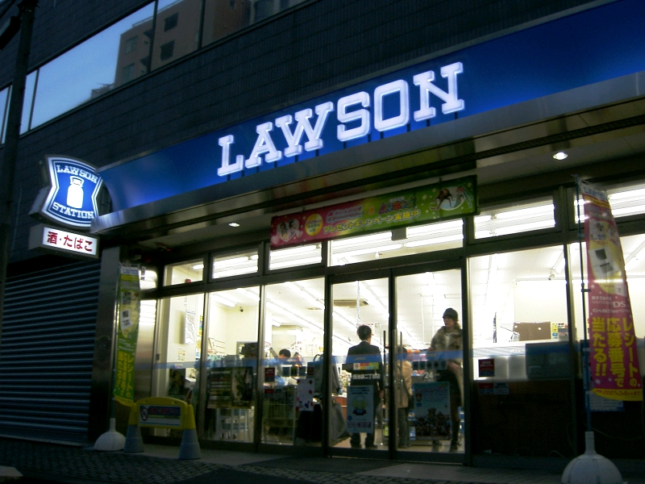
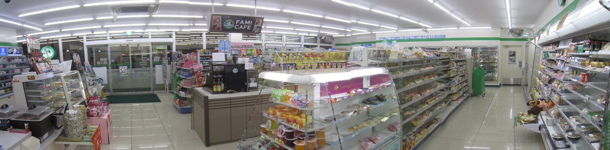

Saturday · Business
: the product for the progress the buyer is trying to make
, , and ’s December 2005 essay, and the September 2016 follow-up with and : stop segmenting by or . Ask what customers the offer to do. The milkshake commute study, ’s online rebuild, and ’s “furnish it now” integration are the cases — only for facts named public pages actually state.
{kind=link}
This is a strategy-framework lesson, not a company biography and not a promise that naming a “” always raises sales. The December 2005 essay (“”) disguises the fast-food chain; (14 February 2011) and ’s later talks name . Claims about what morning buyers said (boring commute, one free hand, hunger by mid-morning, 40 percent of shakes bought early) are taken from that piece and from ’s public retellings, not from invented store data. The essay and the 2011 piece do not publish a before-and-after sales chart for a redesigned morning shake, so this capsule does not invent one. ’s use of jobs language is taken from authors’ public accounts (Boston Globe, 4 October 2016) and from later named reporting; operating statistics those pages do not state are omitted. is ’s example of a firm hard to copy because it integrates around (“furnish an apartment right now”), not a claim that ’s founders used the 2005 vocabulary. ’s (1960) is named as an earlier hole-not-drill framing, not as identical theory. ’s outcome-driven work is named where priority fights over credit appear in public discussion; this lesson does not adjudicate patents. “” from the earlier Saturday capsule is named only where noncustomers and reconstructed offers overlap; Southwest is not reused.
Select any words, or tap a dotted term.
- 1960 Marketing Myopia , “,” . The drill-bit line later associated with Leo McGivena: people buy quarter-inch holes, not quarter-inch bits. An ancestor of language, not the full framework.
- 2003 Paul LeBlanc at SNHU becomes president of . Public accounts of the later online rebuild treat this appointment as the start of the leadership window in which jobs language was applied.
- Dec 2005 Marketing Malpractice , , and , “,” , December 2005. Public statement of marketing against demographic and .
- 14 Feb 2011 Milkshake Marketing Carmen Nobel, “’s ,” . The public write-up of the commute study: 40 percent of shakes bought early morning; one free hand; boredom and mid-morning hunger.
- Sep 2016 Know Your Customers’ Jobs , , , and , “Know Your Customers’ ‘,’” , September 2016. Progress in a ; functional, social, and emotional dimensions.
- Oct 2016 Competing Against Luck , , , and , (HarperBusiness). Book-length statement; appears in the authors’ public excerpts.
- 4 Oct 2016 Boston Globe excerpt , , , and in the Boston Globe: students “” versus “”; had served on ’s board of trustees.
Before
When you know the buyer’s age and still miss why they buy
Most marketing systems can describe a customer. They know an age band, an income band, a preferred channel, a past basket. The December 2005 essay “,” by , , and , opens on a blunt failure rate: tens of thousands of new consumer products launch each year, and most of them do not stick — after firms have already spent heavily to “understand” what buyers want. The authors’ claim is not that researchers are stupid. It is that the usual ways of cutting a market — by , or by demographic profile — organize data that is easy to collect and still miss the cause of a purchase.
The open page of that essay quotes , then CEO of Procter & Gamble, saying marketing needs a new model. ’s later teaching line, recorded in Carmen Nobel’s 14 February 2011 piece, is sharper: being eighteen to thirty-five with a college degree does not cause you to buy a product. It may correlate with the decision. The causal mechanism, in this view, is that has arisen in someone’s life, and they something to get it done.
{kind=link}
had already warned, in “” (, 1960), that firms which define themselves by the product they make can miss the need they serve. The quarter-inch drill bit is famous because people want the hole. keeps that pressure and adds method: watch the , name the progress, and treat bagels, bananas, and boredom as real competitors when that is what the buyer is choosing among.
The framework
Progress in a circumstance — hire, fire, and the dimensions of a job
, in the September 2016 essay by , , , and , is the progress a customer seeks in a particular . Some jobs are small (pass the time in a line). Some are large (find a more fulfilling career). Some arrive on a schedule (pack a lunch). Some arrive because a suitcase was lost. When someone buys, they a product to help. If it does well, they tend to it again. If it does a crummy , they it and look for something else.
Three commitments sit inside that sentence. First, beats persona: the same person hires different things at 7 a.m. on a commute and at 7 p.m. with a child. Second, is not only functional. The 2016 essay insists on social and emotional dimensions — how the choice makes someone feel, and how it looks to others — as load-bearing, not decorative. Third, the set of candidates for is wider than the shelf category. A morning milkshake competes with a bagel that crumbs on a shirt, a banana that is gone too fast, and the empty boredom of the drive.
The 2016 essay also places beside ’s earlier disruptive-innovation work. , the authors write, explains how incumbents respond when entrants attack; it does not, by itself, tell you what to build that customers will . is offered as that missing causal story of choice. You do not need to accept every later consulting worksheet to use the core move: stop asking only who the buyer is, and ask what progress they are trying to make, under what constraints, with what else on offer.
, in the 2011 piece, is one organizational consequence. Kodak’s FunSaver names of preserving a fun occasion. Milwaukee’s Sawzall names of cutting through almost anything. The company name alone, argues there, does not give you the market. name can. That is a branding claim, not a guarantee — and it is why the theory keeps returning to verbs of progress rather than nouns of category.
The cases
A commute shake, an online university, and a store built around “now”
Clayton M. Christensen
HBS; d. 2020
Co-author of the December 2005 and September 2016 jobs essays and of . Public voice of the and of as a complement to .
Scott Cook
Intuit
Co-founder of ; co-author of “” (, December 2005). Ties the framework to a product company without requiring a fabricated release note.
Taddy Hall
2005–2016 essays
Co-author of both jobs essays and of .
Karen Dillon
2016
Former editor; co-author of the September 2016 essay and of .
David S. Duncan
2016
Co-author of the September 2016 essay and of .
Paul LeBlanc
SNHU president from 2003
Named in the authors’ public accounts as the leader who separated “” from “” and rebuilt online adult processes around the second .
The is the teaching case that made the method audible. A fast-food chain wanted more shake sales. It segmented by product and by the demographic of a “typical” shake buyer, asked that profile what an ideal shake was like, and improved along those answers. Sales did not move. A researcher then spent a day watching who bought shakes, when, and whether they drank them in the restaurant. About 40 percent were bought first thing in the morning, to go. The next morning’s interviews, as Nobel reports ’s account, found a shared : a long, boring commute; at most one free hand; work clothes; not hungry yet but hungry by mid-morning. The thick shake through a thin straw lasted, stayed tidy, and gave the drive something to do. Bagels and doughnuts failed parts of that . Once was named, the improvement list changed — thicker for the morning, more interesting with fruit chunks, faster to buy — and a different, thinner shake for the afternoon “treat for a child” , where a half-hour struggle with a straw punished the parent.
is the case of a firm that used the language to rebuild an offer, not only to tell a classroom story. became president in 2003. In the authors’ Boston Globe excerpt (4 October 2016) and in ’s public retellings, was serving at least two different jobs with one institutional habit. Traditional-age undergraduates often residential college for a “” — campus life, clubs, the transition into adulthood. Working adults the online programs needed something else: to “” in a career while raising children or holding . Prestige theater and climbing walls were the wrong improvements for that second . Speed of financial aid, convenience, personal advising, and fewer administrative hurdles were the right ones. The strategic content is the separation of jobs and the redesign of processes around the adult online — not a claim that every enrollment chart in later press can be pasted here without its own source line.
{kind=link}
, in ’s 2011 remarks, is the integration exhibit. Nobody, he says there, has managed to copy , which helps customers do of furnishing an apartment right now. The point is not a single low-price sofa. It is the stack that serves : showroom path, flat packs in the warehouse aisle, tools and bits in the same trip, food for the family that came along, childcare in some stores. A rival can match a SKU and still fail if the afternoon still requires four other shops. That is why talks about organizing around , not only about writing a better feature list inside an old org chart.
{kind=link}
_@_SXSW_2017_(33163209190).jpg){kind=link}
Same time elsewhere
Other morning hires: the konbini commute
The milkshake problem is a morning-progress problem. In Japan, in the same decades the essays were circulating, , , and 7-Eleven stores were already dense along station approaches — hot cans, onigiri, coffee machines, a layout built for a one-handed walk to the platform. That is not “Asia’s version of .” It is a contemporaneous retail form for a related : get something tidy, fast, and filling enough into a commuting body without sitting down. The jobs lens travels; the SKU list does not have to.

{kind=link}

{kind=link}
Elsewhere in the same years, online degree programs and open universities were also sorting “” from “,” whether or not they used ’s nouns. The story matters because its leaders and the book authors said the jobs words out loud and redesigned processes to match. Other systems can land on the same separation by another route. Contemporaneous does not mean copied.
Limits
A useful causal story is still easy to fake
Jobs language can become a slogan. Any team can write “help me feel confident” on a slide and call it research. The ’s discipline was observation plus interviews in the of purchase — who, when, with what constraints — not a brainstorm of emotional adjectives in a conference room. Without that fieldwork, “” is just a prettier persona.
Credit and method fights are public. and claim earlier and more formal jobs-related tools; appears in SNHU-adjacent accounts as a collaborator on interviews. This lesson teaches the line because that is the named magazine trail (2005, 2016) and the book trail (2016). It does not settle who invented which worksheet.
Data systems push the other way. ’s joke in the 2011 piece is that God only made data available about the past, and that past data is filed by and customer category because those cuts are easy. Store shelves and org charts are often cut the same way. A tool that hangs a door in one step can still die if the retailer has no aisle for “hang a door.” names that friction; it does not erase it.
Overlap with is real and partial. Both care about people the category has not been serving, and both warn against matching rivals on the industry’s usual list. ’s Eliminate-Reduce-Raise-Create grid rebuilds a value curve. asks what progress is being . You can use one without the other. You should not paste Cirque or the Wii into this lesson as if they were milkshake interviews.
After
The book, the board seat, and the vocabulary that stuck
collected the argument in 2016. The Boston Globe excerpt the same October put in front of a general audience and noted ’s past service on that university’s board — a relationship to disclose, not to hide. Product teams in software, especially, kept the / vocabulary; consultants multiplied canvases. died in 2020. The essays remain the public checkpoints.
What travels is the question order. Who is the buyer is still worth knowing. What progress are they this for, in this , against which alternatives — that is the cut the 2005 essay said demographic dashboards were missing. When a team can answer it with observed constraints, not with invented poetry, the theory has done its .
A question
A question to keep asking
Pick one product you bought this week. What did you it to do, what else were you considering, and which constraint (time, one hand, embarrassment, a child, a boss) decided it?
Fun fact
The 2005 essay hid the restaurant; the podcast did not
In “,” the milkshake chain is anonymous. By the December 2016 Ideacast, says “” out loud when he retells the commute study. The method is the same; the brand label in public talk is not. Treat the cup in this lesson as the category under study, not as a stamped proof that ’s disguised chain was already named in print in 2005.